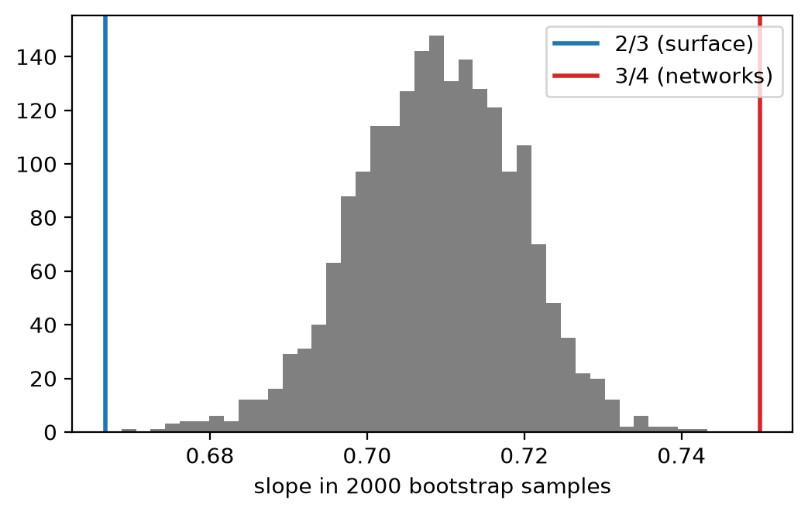

Evidence · Part 4
The interval excludes both 2/3 and 3/4: with 422 species the slope is known to about ±0.02, precise enough to reject both textbook values. Birds give 0.655 (0.635 – 0.674): compatible with 2/3 only.